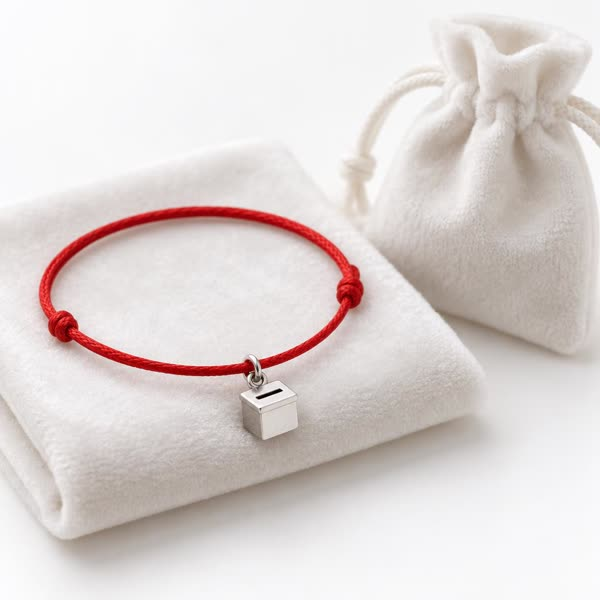

דבר הרב
ידידיי וחבריי, אזרחי הקהילה,
בשעה שכל העולם רץ אחר הסקרים, ישבנו אנו בבית המשפט ולמדנו את מגילת העצמאות, את חוקי היסוד ואת פסקי הדין, ולמדנו שאין הסקר אלא לשעתו, והדמוקרטיה לעולם עומדת.
האתר הזה נפתח כדי שכל אזרח, בלי הבדל דת, גזע ומין, מכל גוש ומכל מגזר, יוכל לשאול שאלה, ללמוד את החוק, ולקחת חלק בחיזוק הדמוקרטיה ושלטון החוק. גם מי שהצביע לגוש השני, חס ושלום, מוזמן. לא נשאל למי הצבעת. נשאל רק אם הצבעת.
אבקשכם לשלוח את שאלותיכם. מדי שבוע אני עונה לשאלות הציבור בשיעור, בפני הקהל, ברבים.
בברכת הדמוקרטיה ושלטון החוק,
הרב דמוקרטוביץ

אודות הרב: מגדולי הפרשנים בדורנו של מגילת העצמאות, חוקי היסוד ופסיקת בית המשפט העליון. למד בצעירותו בישיבת ״הפרדת רשויות״, ומשמש כמזכיר ועדת קלפי ברציפות מאז הבחירות לכנסת ה-17. אינו מחמיץ דיון בהרכב מורחב, ויודע בעל פה את כל דעות המיעוט. מחיבוריו: ״כבוד וחירות״, פירוש על חוקי היסוד; שו״ת ״קול קורא״ (ארבעה חלקים); ו״עיני העדה״ (עדה - מלשון ועדה), על פרוטוקולי ועדת הבחירות המרכזית.
שיעורי הרב חדש!
הלכות בחירות ודמוקרטיה לקראת הימים הנוראים
ארבעה ראשי שנים, דין הדלקת המנגל, ותפילת נעילה של המדגמים.
שו״ת הלכות בחירות - הרב עונה לשאלות הציבור
פרשת לך־לך, התרת סקרים, בעל ״נזר הצדק״ זש״ל, ודינו של המצביע למפלגה שאינה עוברת את אחוז החסימה. שלחו שאלה לשיעור הבא
שאל את הרב - שו״ת
הרב עונה לשאלות הציבור בשיעור השבועי. השאלות נענות לפי סדר הגעתן, ובלבד שאינן סותרות פסיקה קודמת של בית המשפט העליון. שאלות נבחרות:
בעלי מצביע לגוש השני. האם מותר לי לשבת איתו לארוחת שישי?
שכחתי להצביע, והקלפיות כבר נסגרו. מה תקנתי?
התקשרו אליי מסקר. האם אני חייב לענות?
בני הגיע לגיל 18 בדיוק ביום הבחירות. האם הוא כבר מצביע?
האם מותר להצביע בפתק שנפל על הרצפה?
האם מותר לבקר שופט?
עמותת ״קופת הקולות״ (ע״ר)
העמותה היא הזרוע האזרחית של הקהילה, ופועלת לחיזוק הדמוקרטיה, שלטון החוק ועצמאות בתי המשפט במדינת ישראל. כל פעילות העמותה ממומנת מתרומות הציבור בלבד, ללא שקל אחד מתקציבים קואליציוניים.
- כולל אברכי משפט40 אברכים לומדים יומם ולילה את פסקי הדין של בית המשפט העליון, כולל דעות מיעוט.
- גן ״פרגוד״חינוך לדמוקרטיה מגיל 3: איך נכנסים מאחורי הפרגוד באימה וביראה.
- גמ״ח מעטפות כפולותהשאלת מעטפות לחיילים, לסגל דיפלומטי ולמי שאיבד את שלו בדרך.
- ניחום אבליםצוות מתנדבים מגיע לבית האבל לאחר פרסום המדגמים, עם עוגה וסקר חדש.
- ביקור חולי סקריםליווי למי שבודק את האפליקציה של הסקרים יותר משלוש פעמים ביום.
- הכנסת קלפימעמד הכנסת קלפי חדשה לבית המשפט, בשירה ובריקודים.
- חברותא בין הגושיםזוגות לימוד במגילת העצמאות, אחד מכל גוש. במחלוקת מכריעה דעת המיעוט, שגם לה מגיע פעם.
- מוקד סיוע משפטיעתירה ראשונה לבג״ץ חינם לכל דורש. מהעתירה הרביעית בחודש - בתיאום מראש.
 תמונת AI
תמונת AI
תרומות - כי הכל מתחיל בקול אחד
בעמותה שלנו גם התרומה דמוקרטית. כל תרומה מובאת להצבעה בוועד העמותה, ומתקבלת ברוב קולות. בחרו מסלול, ונציג העמותה יחזור אליכם להשלמת התרומה לאחר ההצבעה.
הסכום המינימלי לעבור. שמכם ייכנס לרשימה, אבל בקושי.
הרב יקרא את שמכם בקול בשעת ספירת הקולות.

תעודת ״שומר חוק״ חתומה בידי הרב + חוט אדום ״שמירה מפני סקרים״.
על שמכם או לזכר יקיריכם. הסעיף יוקדש לכשתיכתב החוקה.
הוראת קבע. 40 אברכי משפט יעמדו לזכותכם במשמרת 40 יום מול בית המשפט העליון.
- ממלאים את הטופס ובוחרים מסלול.
- ועד העמותה מצביע על התרומה (נדרש רוב של 61 מתוך 120 חברי ועד).
- תרומה שלא עברה - ניתן לערער לבג״ץ.
- נציג העמותה חוזר אליכם להשלמת התרומה. אין לשלוח כסף לפני ההצבעה.
תרומות לעמותה מוכרות לצורכי מס לפי סעיף 46. הבקשה תלויה ועומדת בפני הרכב מורחב. חלוקת התרומות בין מוסדות העמותה נעשית לפי שיטת בדר-עופר, ונחתם הסכם עודפים עם קהילת ״אהבת הקלפי״.